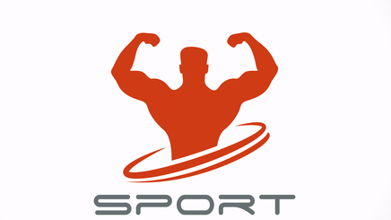

Luck is what happens when preparation meets opportunity.
Svetskom rekorderu u "mrtvom dizanju" i evropska titula

Sa podignutih 265 kg u disciplini "mrtvo dizanje", takmicar niskog kluba "Konzulat" Milan Grozdanovic, osvojio je zlatnu medalju u kategoriji do 75 kg na Evropskom prvenstvu. Ovaj rezultat, kazu u niskom "powerlifting" klubu, obezbedio mu je i pehar za relativno najjaceg takmicara u seniorskoj konkurenciji.
Ruskinja u Svrljigu nastupila u opremi nepriznate Republike Donjeck
Na takmicenju u Svrljigu u benchpresu, cetvorostruka juniorska prvakinja sveta Marijana Naumova nastupila je u opremi sa oznakama nepriznate samoproglašene Republike Donjeck. Iako na pomolu diplomatskog incidenta, Naumova za Juzne vesti kaze da ona studira na dve akademije u Moskvi i Donjecku i da je u Svrljigu samo predstavljala ta dva grada i svoje dve obrazovne institucije, a da je ona drzavljanka Rusije.
U Nisu medjunarodno takmicenje u dizanju tegova

Najjaci ljudi iz 5 zemalja, kako su najavili u nickom klubu Legionari, okupice se u subotu, 16. decembra, sa pocetkom od 10 sati, u sali Osnovne ckole “Miroslav Antic”. Oni ce se nadmetati u razlicitim disciplinama dizanja tegova, a organizatori ocekuju da ce ovo biti najbrojnije takmicenje u Srbiji ove godine.
Nislija odbranio svetsku titulu i zabelezio novi rekord u dizanju tegova
Apsolutno najbolji takmicar u disciplini "mrtvo" dizanje tegova sa opremom, na Svetskom prvenstvu odrzanom u Ceskoj, bio je NiSlija Milan Grozdanovic. On je oborio svetski rekord podigavsi 270 kg i tako odbranio titulu planetarnog sampiona u kategoriji seniora do 75 kg.
Nislijke ponovo najbolje na Balkanu u "powerlifting"-u
U konkurenciji takmicara iz zemalja regiona i gostiju iz Poljske najbolje su se pokazale devojke iz nickog kluba Legionari. One su osvojile tri zlata i jedno srebro, zbog cega je ekipa iz Nisa proglasena za najbolju u zenskoj konkurenciji.
Dva zlata za Nislije na medjunarodnom takmicenju u "powerliftingu"

Aktuelni sampion sveta u "powerliftingu" Milan Grozdanovic vraca se sa gotovo svakog takmicenja sa novom titulom, pa tako ni zlato osvojeno na Otvorenom prvenstvu Crne Gore nije bilo neocekivano. Medjutim, glavno iznenadjenje bila je Nislijka Ana Kulic, koja je, uprkos tome sto je bila najmladja takmicarka, postala sampion.
Proizvodi koje nudimo
Tocak za trbusnjake
2000RSD
Tocak za trbusnjake je idealan za one koji zele da ojacaju trbusni zid i ujedno poboljsaju koordinaciju.
Ulozak za bench
3000RSD
Ulozak za bench se koristi za "overload" grudnih misica kako bi se povecala snaga guranja na takmicarskom benchu.
Swiss sipka za lat
8000RSD
Swiss sipka je idealna zamena za staromodnu ravnu sipku na lat masini. Sa njom mozete pogoditi vise misica ledja.